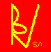
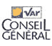
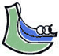
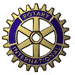
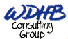

Ce projet, conçu en collaboration
avec : |
|
a pu voir le jour grâce au soutien de nombreux
partenaires : |
_______________________________________________________________________ |
A-B-C-D-E-F-G-H-I-J-K-L-M-N-O-P-Q-R-S-T-U-V-W-X-Y-Z |
| |
|
est notre partenaire informatique. Ils nous
prêtent 2 Powerbooks 12 pouces, les plus petits portables au monde,
bien utiles à l'actualisation du site que vous êtes en-train
de visionner. Un remerciement particulier à Pascal Cagni. |
| |
|
est l'agence multimédia du projet. Dirigée
par Anthony Sarabezolles, elle a assuré le graphisme et l'architecture
de ce site internet gratuitement. Les heures passées dans les locaux
d'astrolabe nous ont permis de rencontrer une équipe de passionés
à l'approche professionelle et créative. Un grand merci
à tous. |
| |
|
est un laboratoire pharmaceutique qui, par l'intermédiaire
de Claude Chollet, a été le premier à nous aider
financièrement dans nos démarches. Le premier coup de pouce
est le plus courageux, merci ! |
|  |
Bertrand & Victor S.A. |
est l'hébergeur officiel du projet. Un grand
merci à Messieurs Alfroid et Chemineau pour leur patience et leur
soutien durant toute la période de préparation. |
 |
|
s'est associé à notre projet en nous permettant d'acheter
à des prix plus que compétitif un Reflex Numérique
D-60 qui nous servira à vous faire partager toute la partie visuelle
du projet. |
|  |
|
nous soutient financièrement, un grand merci
à Patrick Heintz et Mme Benhamou. |
|  |
|
nous soutient financièrement. Un grand merci
à Eric Lehéricy et René Garrec.
|
| |
Concession Citroën d'Alençon |
La concession Citroën d'Alençon (en la
personne de Gilles Fourchaigue que nous remercions chaleureusement) nous
a offert le fabuleux bolide qui nous permet de sillonner l'Europe à
la rencontre des initiatives que nous allons étudier (nous serons
obligé de l'abandonner en Turquie au profit d'une ONG de notre
choix). A noter que nous avons mis en place une opération "
Carbone Neutre ". Nous ferons planter 40 arbres dans une forêt
en Inde pour compenser les émissions de CO2 que nous allons émettre
pendant notre voyage. Plus d'info sur www.futureforests.com. |
| |
|
le Tour du Monde en 80 Hommes est lauréat
d'une bourse d'Etat Défi Jeune Calvados attribuée par le
ministère de la Jeunesse et des Sports à des porteurs de
projet entre 15 et 28 ans. |
|
|
est le partenaire médical du projet.
Un remerciement spécial à Martin Chassang qui nous a constitué
notre trousse de secours. |
| |
|
a été l'un des premiers partenaires à
nous avoir fait confiance. Il est l'assureur officiel du projet (assurance
équipement, voiture, santé et rapatriement) et nous aide
financièrement. Un remerciement spécial à Mme Lanne
& M. Tendil. |
|
|
nous a fourni toutes les cartes nécessaires pour
notre itinéraire. Un remerciement particulier à Catherine
Sabah. |
| |
|
nous a hébergé pendant les 6 mois de
préparation à Paris. Un remerciement spécial à
Philippe pour son soutien quotidien, la qualité des personnes qu'il
nous a permis de rencontrer, et sans lequel le projet n'aurait pas eu
la même dimension. |
| |
|
est un des partenaires financiers du projet. Son engagement
dans le sens du développement durable relayé par Bertrand
Collomb, fait de ce groupe l'un des pionniers français de la responsabilité
sociale et environnementale des entreprises. |
| |
|
est un des pionniers de l'industrie textile en matière
d'éco-conception. Ils nous offrent notre équipement de voyage
(tente, sacs, duvets, habillement) et nous leur transmettrons chaque semaine
un carnet de bord et des photos que vous pourrez consulter sur le site
web du groupe (www.lafuma.fr).
|
| |
|
nous aide en nous offrant des guides de voyages des
pays que nous allons traverser. Un remerciement particulier à Didier
Buroc, responsable des partenariats. |
| |
Mister Brown |
est l'agence de communication qui a réalisé
gracieusement notre logo. Un grand merci à Aimery de Moucheron
et bravo à Jean-Marc Arnoult pour ses idées !!! |
| |
|
par le dispositif " Course en Solidaires "
participe financièrement au projet. Un grand merci à Maud
Renouf. |
| |
|
(l'agence des étudiants) est notre partenaire
voyagiste. Ils nous aident sur les billets trans-continentaux (Japon-USA
& Brésil-Afrique du Sud) et nous rédigerons des articles
pour animer leur site Internet. Un grand merci à Xavier Bodart.
|
|  |
|
nous soutient financièrement et nous donne accès
au réseau du Rotary International. Un grand merci à Jean
Louis Baju, Jean Pedinielli et Daniel Hauser. |
| |
|
soutient activement notre projet par l'intermédiaire
de Tokia Saïfi, Secrétaire d'Etat et de son attaché
parlementaire Stéphane Seigneurie.
|
| |
|
Acteur majeur de l'industrie chimique au niveau mondial
et fortement engagé sur la voie du développement durable,
il nous soutienne financièrement dans notre démarche avec
comme contrepartie un partage d'expérience à notre retour.
|
|  |
|
est un cabinet de conseil américain, basé
à San Francisco, qui est organise des learning expedtions aux USA,
et dorénavant en Chine pour déclencher du changement dans
les façons de faire d'équipes dirigeantes européennes.
Il nous aide financièrement et logistiquement. |
| |
|
|